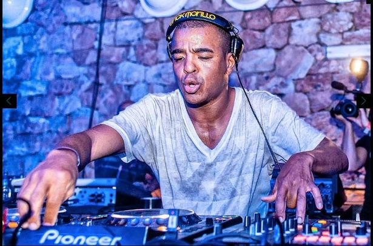
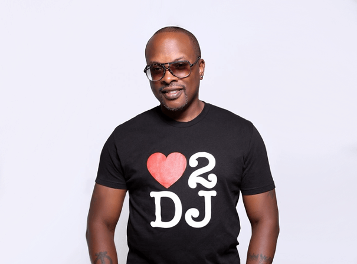
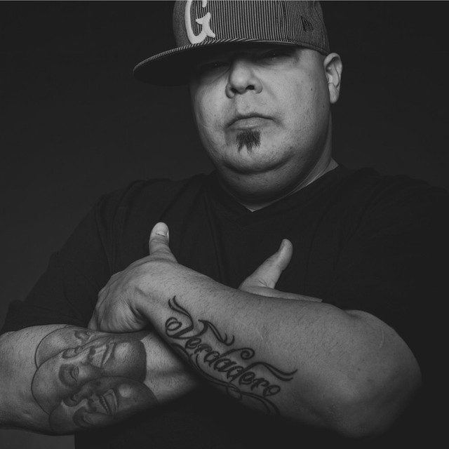

DJ Chus is my number one favorite DJ. He’s the first person I think of when someone mentions House music or DJs. I’ve been dancing to his music for years and he always knows how to get the crowd pumped up! He is a master at mixing together different genres of music in order to create an awesome set that everyone can enjoy. Chus is also known for playing some old school house tracks, which are always a hit at any party.
These are my favorite DJs and why I love them so much:
-
DJ Chus
-
Mihai Popoviciu

He is a Romanian DJ and has been around for many years and has always played high-quality music, including House music.His mixes are so good that they can make you forget everything else going on in your life and just focus on the beat of the song! It’s incredible how well he can work with any genre of music or beat pattern and make it his own. Mihai always knows exactly what to play at each moment during his sets, which is why everyone loves him so much!
-
Erick Morillo
 If you have never heard of him, then I’m sure you know at least one of his songs. He has been in the game for quite some time now and he continues to impress! He is a great producer and DJ who knows how to make people dance. His beats are always on point and they make me want to move every time I hear them played out loud!
-
DJ Jazzy Jeff
 He is one of my favorite DJs because he uses so many different instruments in his music. He’s not just a turntable player—he also plays the piano, guitar, drums and more. He makes some really cool mashups that mix up different types of music together into one song!
-
DJ Sneak
 He plays a mix of House music and Techno, which are two genres that I love the most. When he gets on stage, it’s like there is magic in the air. He has such an amazing energy about him that everyone at a party wants to be around him. If you ever get the chance to see Sneak perform live, do not pass up this opportunity!